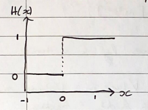
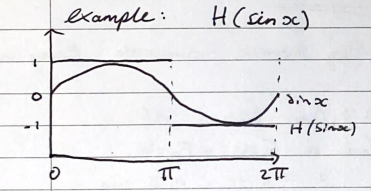
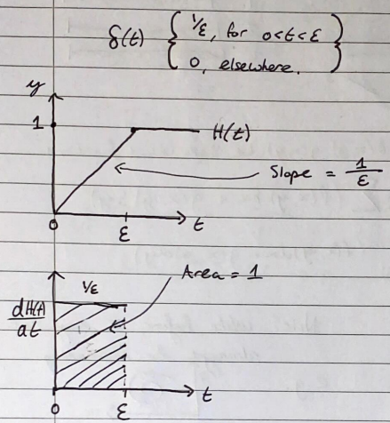

Take note of the limits here. The upper limit must be the variable you are differentiating by, and the function in the integral must not. \[\frac{d}{dx}\int^{x}_{a}f(t)dt=f(x)\] Proof \[\begin{align} &\frac{d}{dx}\int^x_af(t)dt=\frac{d}{dt}\left [F(t)\right ]^x_a\\\\ &=\frac{d}{dx}F(x)-\frac{d}{dx}F(a)\\\\ &=f(x)-0\\\\ &=f(x) \end{align}\]
Three forms and their respective substitutions:
| Form | Substitution |
|---|---|
| \(\int\sqrt{a^2-x^2}dx\) | \(x=a\sin\theta\) |
| \(\int\sqrt{a^2+x^2}dx\) | \(x=a\tan\theta\) |
| \(\int\sqrt{x^2-a^2}dx\) | \(x=a\sec\theta\) |
We can treat type I improper integrals as limits: \[\int^\infty_af(x)dx=\lim_{b\to\infty}\int_a^bf(x)dx=l\] If the limit \(l\) is finite, the integral is said to converge and be equal to \(l\). If \(l\to\pm\infty\) (or does not exist) as \(b\to\infty\), then the integral is said to diverge. Note: the following is also possible \[\int^\infty_{-\infty}f(x)dx=\lim_{a\to-\infty}\int_a^0f(x)dx+\lim_{b\to\infty}\int_0^bf(x)dx\] …Which, if either or both of these limits diverge, then the original expression diverges also.
For a integral \(\int^\infty_af(x)dx\): If for a large \(x\), \(f(x)=\frac{g(x)}{x^n}\) is such that \(g(x)\) is non zero:
Then the integral is convergent.
If for integral: \(\int^b_af(x)dx\), the range of \(a\;\&\;b\) are finite, but \(f(x)\to\pm\infty\) as \(x\to a\), \(x=a\) is known as a singularity point. Such we can define the improper integral: \[\int^b_af(x)dx=\lim_{\epsilon\to0}\int^b_{a+\epsilon}f(x)dx=l\] If \(l\) is finite, the integral will converge and be equal to \(l\), else it will either be infinite or not exist and in which case will be said to diverge.
When translating from cartesian coordinates to polar, cylindrical or spherical coordinates, we must multiply the function by the Jacobian. \[\begin{array}{l} \textrm{polar:}\iint dxdy\implies\iint r\cdot drd\theta\\ \textrm{cylindrical:}\iiint dxdydz\implies\iiint r\cdot dzdrd\theta\\ \textrm{Spherical:}\iiint dxdydz\implies \iiint\rho\sin^2(\phi)\cdot d\rho d\theta d\phi \end{array}\]
(Step function) \[H(x)\equiv \Theta(x)\equiv v(x)\] It is related to the modulus function... \[|x|=x\cdot(H(x)-H(-x))\]


This is useful in many applications of physics, such as momentum changes when a ball hits a wall.
This one is harder to understand... Definition: \[\delta(t)=\frac{dH(t)}{dt}\qquad:\qquad\int\delta(t)dt=1\]

Definition: Let \(f(x,y)\;\;\&\;\;g(x,y)\) be single values functions. \[I_{line}=\int_{(AB)}(f(x,y)dx\;+\;g(x,y)dy)\] This way is a bit difficult to apply, so it is generally better to use parameterisation. Length of a curve: \[L=\int_Cf(x,y)ds\qquad\qquad ds=\sqrt{\left (\frac{dx}{dt} \right)^2 + \left (\frac{dy}{dt} \right)^2}dt\] Where the limits are the bounds of \(t\).